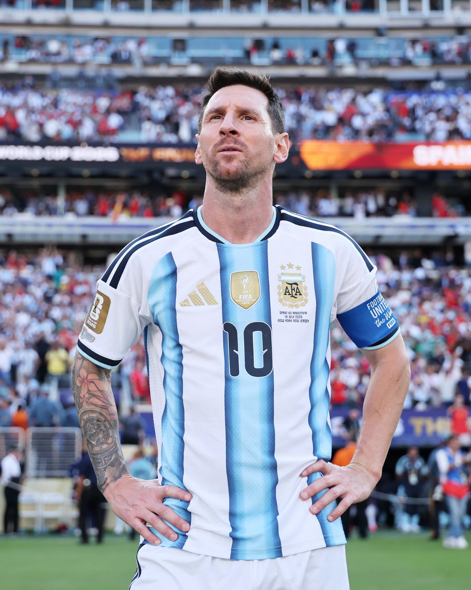

Messi Bids Farewell to Argentina with a Goal, Two Assists and a Win
Sports
By Newsroom | 8 October 2026
BUENOS AIRES. Lionel Messi's international story ended the way Argentina had hoped it would: with a win, a goal and a stadium on its feet.
In front of a sold-out Estadio Monumental on Tuesday, Argentina beat Benin 3-0 in "The Last Tango", Messi's 208th and final appearance for his country.
A night made for Messi
The breakthrough came early in the second half. Messi swung in a corner and Nicolás Otamendi rose to head home in the 48th minute. Thirteen minutes later, Messi slipped a pass through to Nico Paz, who curled in a spectacular second.
Then came the moment the crowd had been waiting for. In the 71st minute, Messi stepped up to a penalty and sent it into the roof of the net, his 126th and last goal for Argentina. The stadium erupted into a chant of "Messi, Messi" that has echoed through Argentine football for two decades.
At the final whistle, Messi was handed the match ball, surrounded by family and fighting back tears.
Why it ended now
Messi announced his international retirement on 31 August in a message on Instagram. He said he had given everything he had and wanted a new generation of players to get their chance. He wrote the message two days after Argentina's 1-0 extra-time loss to Spain in the World Cup final.
The Argentine Football Association then invited him back for the farewell it said he deserved, and Messi accepted. Members of the 2022 World Cup-winning squad and their families joined him for the occasion.
A career in numbers
Messi leaves as Argentina's record appearance-maker and leading scorer, with 126 goals. He is also the national team's all-time assist leader. He scored 21 of his goals at World Cups and played in six of them, a record he shares with Cristiano Ronaldo.
He briefly retired from international football in 2016, then went on to the most successful stretch of his career with Argentina, winning the Copa América in 2021 and 2024, and lifting the World Cup in 2022.
Not the end of football
Messi's retirement is from international football only. He will keep playing for Inter Miami, where his contract runs through the 2028 season.
The next question for Argentina is a symbolic one: who will inherit the number 10 shirt?